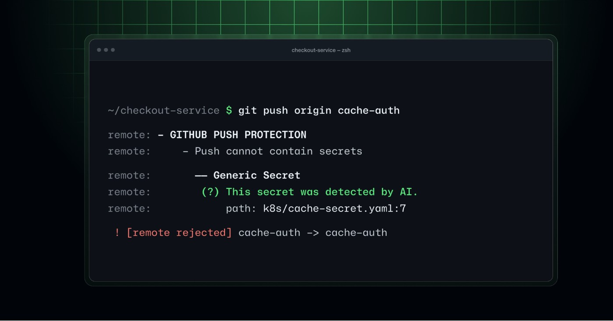

格式表之外的凭据
带固定前缀的服务密钥比较容易按格式匹配；内部系统的密码、临时测试凭据或没有统一外观的值更难判断。GitHub这次公开预览把AI识别放进推送保护，结合周边代码如何使用某个值进行判断。命中后开发者在推送返回信息里看到阻断及位置，修复动作仍发生在自己工作区。它补足的是进入仓库之前的一次检查，不是一个新的密码管理器，也不代替应用读取环境变量或专用密钥存储的设计。
GitHub AI secret push protection · 产品更新 · 厂商公告与文档

带固定前缀的服务密钥比较容易按格式匹配；内部系统的密码、临时测试凭据或没有统一外观的值更难判断。GitHub这次公开预览把AI识别放进推送保护，结合周边代码如何使用某个值进行判断。命中后开发者在推送返回信息里看到阻断及位置，修复动作仍发生在自己工作区。它补足的是进入仓库之前的一次检查，不是一个新的密码管理器，也不代替应用读取环境变量或专用密钥存储的设计。
推送保护检查的是要进入仓库的内容，修复不能只把当前文件那一行删掉就结束。如果待推送的前一个提交仍含有同一值，也需要从相关提交中清理，再重新推送。开发者因此面对两个不同任务：把应用改成不依赖硬编码值，以及处理提交历史里的残留。若凭据已经在其他位置暴露，是否撤销或轮换仍要由对应系统处理，推送被拦不能倒推它从未泄露。界面给出的路径和行号让人能开始定位，但并不完成这些外部工作。
上下文识别有机会发现固定模式漏掉的值，也可能把示例字符串或其他数据判成密钥。团队需要保留能说明判断的上下文，避免只剩一条无法解释的“AI认为危险”。既有push protection的绕过与委托审批流程仍适用；开发代理遇到阻断应把问题交给获授权的人，而不是为完成推送自行换路径。不同组织对哪些人可绕过、何时需要审批有不同配置，不能把预览功能写成统一的人审流程。误报率、延迟和复杂提交表现尚没有本刊独立测量。
本次是默认关闭的公开预览，适用于具备相应GitHub Secret Protection或GitHub Advanced Security资格的组织，并要求启用相关AI扫描与推送保护。新增推送前AI检查会消耗credits，既有推送后的AI扫描计费边界不同，不能把两者混为免费升级。采用时应先了解现有流程：开发者现在为哪些真实凭据返工，误报由谁解释，审批平均卡在哪一步。更早发现能少一次仓库内清理，但如果警报表达含糊，修复任务仍可能集中到少数安全维护者身上。团队可以在错误提示里保留下一步联系人和批准入口，减少开发者面对阻断时到处询问，也避免把紧急提交当作默认绕过理由。